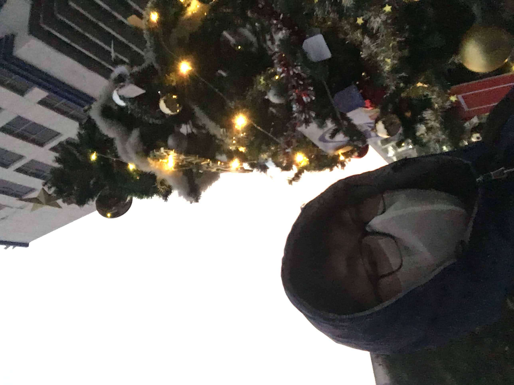

6h10 AM ngày 22/12/2022, tại cây thông trước thư viện. Đến sớm nhất trường.
"Ngày 11/12/2022"
Lại một mùa Giáng sinh nữa tới, và không biết các bạn thế nào, chứ tôi đã chuẩn bị sẵn tâm
thế cho ngày này từ nhiều tuần trước. Tôi sẽ dậy thật sớm, đánh răng rửa mặt ăn sáng, pha
một cốc cà phê thật ngon rồi ngồi vào bàn học. Còn gì tuyệt hơn nếu giành ra đêm giáng sinh
để làm chủ Mạng máy tính – môn học vừa lắm lí thuyết vừa khó nhớ, thế nên tôi quyết định ôn
ngay trước ngày thi một ngày. Qua môn hay không thì chịu, nhưng tôi biết trong lúc tôi đang
điên đầu với đống bài tập thì bạn bè đang vui vẻ ra ngoài dạo phố, tay trong tay với người
yêu, có thể sẽ ôm, tuyệt vời hơn là cái hôn – một đêm Giáng sinh vui phải biết.
Tôi có thể tự an ủi kiểu: ”Giáng sinh cũng không quan trọng đến vậy”. Nhưng từ lâu tôi cũng
chẳng có cho mình một ngày nào đặc biệt trong năm – một ngày mà mình thực sự mong chờ nó
đến. Ngày sinh nhật dần dần cũng trờ thành một ngày bình thường với tôi, đơn giản là một
chiếc bánh kem, cũng chẳng cầu kì, nhưng quan trọng là tôi được thổi nến bên gia đình, bên
bố mẹ, em gái và con mèo của tôi. Thế nên mỗi lần những ngày lễ đến, tôi có một chút hi vọng
rằng nó sẽ có gì đó khác mọi năm, nhưng cuối cùng thì vẫn là “ngày này năm ngoái”. Có lẽ vấn
đề là ở bản thân tôi, bởi tôi cảm thấy ổn với điều đó - ổn với việc ở trong nhà, làm việc
mình thích giống như bao ngày khác trong năm. Cách sống như vậy khiến tôi thoải mái hơn, bởi
tôi không phù hợp với chỗ đông người, hoặc những nơi phải nói chuyện với nhiều người lạ -
những lúc như vậy bản thân thật lạc lõng, giống như cạn năng lượng vậy. Tôi tự nhận thấy bản
thân dù nói chuyện không hay nhưng cũng không đến nỗi tệ quá, chỉ là trong đa số cuộc trò
chuyện, tôi không có nhu cầu chia sẻ về bản thân, về câu chuyện của mình. Với tôi việc người
khác tò mò về mình phải có lí do, và tôi sẽ dựa vào lí do ấy để cung cấp thông tin vừa đủ.
Còn những câu chuyện phiếm, chuyện vui hàng ngày sẽ là ổn thôi nếu như tôi luôn luôn ở vị
trí lắng nghe. Giải thích dài dòng vậy để nói rằng tôi sẽ khó là người CHỦ ĐỘNG bắt đầu câu
chuyện với người khác. Điều này cũng giải thích việc tôi không thích ra ngoài, không thích
tụ tập (trừ khi đó là anh em bạn thân). Thế nên Giáng sinh trong mắt tôi cũng chỉ như bao
ngày bình thường khác thôi nhỉ ?
Tôi còn nhớ lần gần nhất mình thực sự trông chờ vào Giáng sinh, đó là lúc lớp 6 hoặc lớp 7 (
tôi không nhớ rõ cho lắm); tôi có viết thư cho ông già Nô en để xin một con Lego Factory màu
đỏ - một món đồ chơi mà biết bao nhiêu thằng bạn tôi hồi ấy ước ao. Các bạn biết đấy, đồ
chơi với con trai thật sự chẳng bao giờ tách rời nhau cho được. Và niềm ước ao của tôi lên
đỉnh điểm khi thằng Quang Minh bên lớp K ( lớp bên cạnh lớp tôi) được mua mẫu đó và mang đến
trường. Được chứng kiến tận mắt, được cầm tận tay, phải nói là quá phê. Từ lúc ấy trong đầu
thằng bé 11 tuổi chỉ có con Lego ấy, và tôi vẫn nhớ rõ mình còn mơ thấy nhiều lần cảnh bóc
hộp quà ra món quà ước ao. Tôi cặm cụi viết thư, rồi còn giục bố mẹ gửi nhanh không ông già
Nô en sẽ quên, hoặc sẽ ship trễ - trong khi tôi đang muốn nó ngay-lập-tức. Những ngày sau
thật dài, tôi liên tục hỏi mẹ rằng mẹ đã gửi thưa chưa, rồi còn kiểm tra lịch thường xuyên –
tôi phải nắm chắc được bao giờ sẽ được sờ tay vào món quà ấy. Thế rồi buổi sáng hôm ấy, một
buổi sáng kì diệu với tôi. Trước lúc đi ngủ tối hôm trước, tôi còn kì kèo mãi với mẹ để được
thức đợi khoảnh khắc ông già tận tay nhét hộp quà vào chiếc vớ. Thật khó ngủ, bởi tôi cứ hồi
hộp mãi. Tôi chỉ nhớ mắt mình đã díu lại lúc nào không hay, và khi vừa nhận thức được trời
sáng, tôi đã ào ra khỏi giường đến chỗ chiếc tất treo trong phòng bố mẹ. Và đoán xem, thằng
bé ấy đã hạnh phúc đến thế nào. Giờ nghĩ lại chắc bố mẹ nhớ tôi của ngày ấy lắm, một cậu bé
nhiều năng lượng, vui vẻ và cười nhiều – thay vì cứ trầm tính ít nói như bây giờ. Còn khỏi
phải nói rồi, tôi đã dành cả ngày nâng niu món đồ chơi, rồi còn lén nhét vào cặp mang đi
khoe bạn bè ở trường. Nhìn xung quanh là những cậu bé tò mò khác, kể cả chính thằng Quang
Minh, tôi tự hào thực sự. Tôi thầm cảm ơn ông già Nô en lắm lắm, mà bây giờ tôi nghĩ tôi nên
cảm ơn bố mẹ - những người lúc nào cũng quan tâm hết lòng đến tôi, mặc cho mẹ đến phát bực
vì tôi cứ hỏi thư từ mãi, trong khi bố ngại vì món Lego ấy không phải là rẻ đối với gia đình
tôi. Nhưng cuối cùng họ vẫn để món đồ chơi vào trong chiếc tất. Tôi đoán khi nào có con mình
mới hiểu được niềm vui của bố mẹ khi ấy. Vậy nên họ là những người tặng quà tuyệt vời nhất,
và tôi nghĩ mình nên trân trọng điều đấy trước khi đòi hỏi thêm bất kì món quà nào khác.
Còn Giáng sinh năm nay, tôi mong rằng gia đình tôi sẽ luôn có nhau như bây giờ. Tôi cũng ít
khi thực sự bày tỏ tình cảm trực tiếp với gia đình mình, nhưng tôi sẽ cố gắng nhiều hơn qua
hành động. Giáng Sinh dù sao cũng là một dịp quây quần, cả nhà cùng ngồi lại với nhau mà.
Thế nên nếu bạn cảm thấy cô đơn, lẻ loi một mình trong dịp Giáng Sinh, thì cũng đừng vội
buồn. Hãy thử cách này: tắm cho thật sạch sẽ thoải mái, pha một cốc cacao nóng, chuẩn bị một
chút đồ ăn vặt và bật cho mình vài tập How I met your Mother. Sau đó đừng quên cắm tai nghe
và bật Giáng Sinh viên – một bài hát tôi cực thích vào Giáng sinh, rồi viết vài dòng về bất
kì thứ gì bạn thích, hoặc những gì làm bạn không vui. Cuối cùng thì hãy ngủ thật sớm, bởi
nhỡ đâu bạn có một bài thi vào sáng mai thì sao ?
Giáng sinh vui vẻ, chúc bạn 10 người yêu.
_hieu0thap_